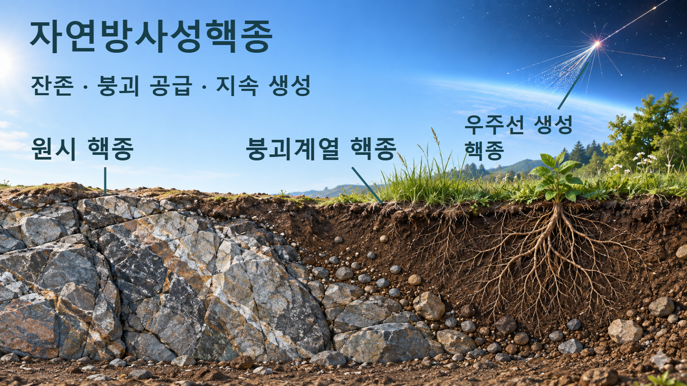
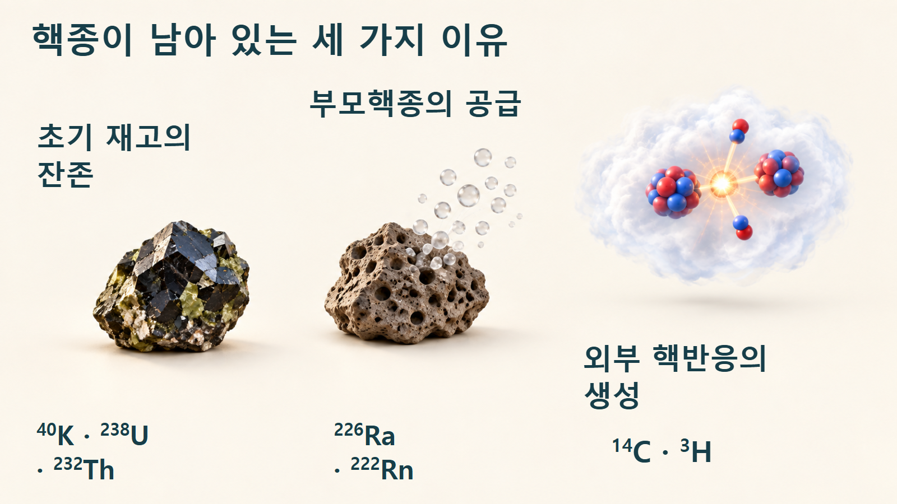
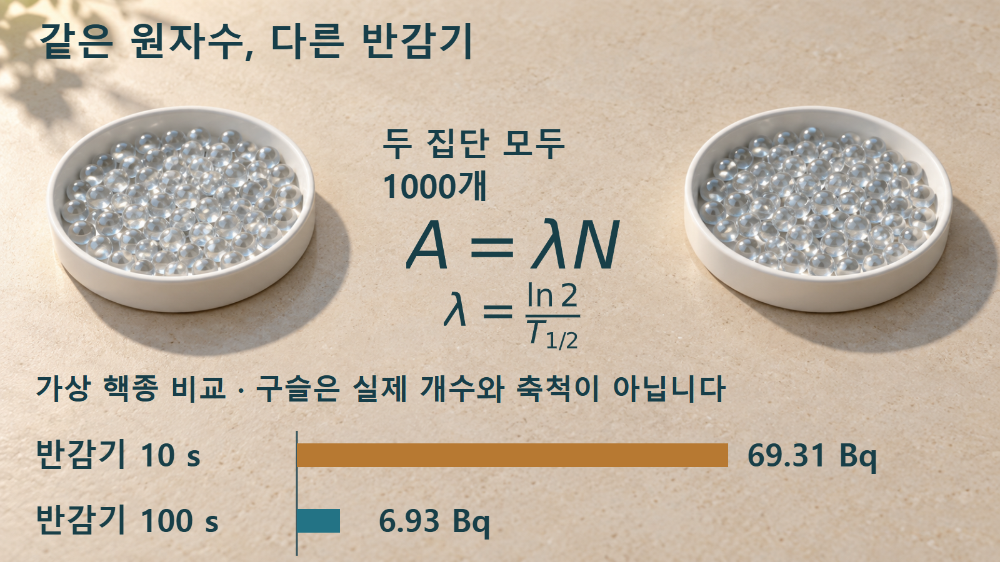
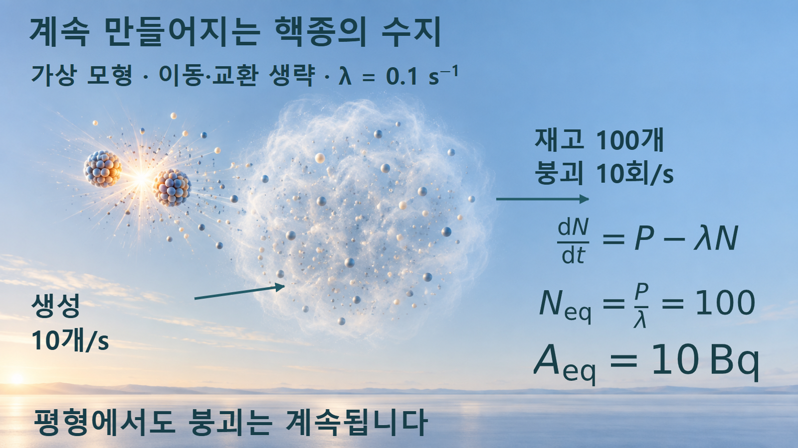

방사성붕괴와 시간 · 058
자연방사성핵종
남아 있는 핵종과 계속 공급되는 핵종
오래 남은 원자, 부모의 붕괴로 생긴 원자, 우주선 반응으로 새로 생긴 원자는 서로 다른 공급 이력을 갖습니다. 두 계산을 통해 기원과 원자수, 활동도를 나누어 읽습니다.

자연에 존재하는 세 가지 이유
자연방사성핵종은 자연적인 과정에서 유래해 환경에 존재하는 방사성 핵종입니다. 지구가 형성될 무렵부터 남아 있는 원시핵종, 그 붕괴계열에서 계속 공급되는 핵종, 우주선이 일으키는 핵반응으로 새로 만들어지는 핵종을 구분하면 현재의 존재 이유가 보입니다. 자연이라는 말은 기원을 나타내며 방사능의 세기나 인체 영향을 정하는 단위가 아닙니다. [1] [2]
칼륨-40, 우라늄-238, 토륨-232는 오랜 반감기 덕분에 지질학적 시간 동안 남아 있는 대표적 원시핵종입니다. 반면 라돈-222처럼 상대적으로 짧은 시간에 줄어드는 핵종도 부모핵종에서 공급되면 자연에서 관찰됩니다. 탄소-14와 삼중수소는 우주선과 대기의 핵반응으로 생기는 자연적 공급 경로를 갖습니다. [1] [2] [3]
자연핵종을 분류할 때에는 반감기만 비교하지 않고 무엇이 현재의 핵종을 공급하는지 살펴야 합니다.

이 분류는 광물 한 조각이 라돈으로 바뀌고, 다시 대기 핵종이 되는 세 단계의 진행도가 아닙니다. 서로 다른 핵종의 재고가 유지되는 원인을 비교하는 틀입니다. 한 환경 시료 안에는 서로 다른 기원의 핵종이 함께 포함될 수 있습니다.
원자수와 활동도는 다릅니다
한 핵종의 원자수가 N이고 붕괴상수가 λ이면 활동도 A는 λN입니다. 활동도는 단위 시간당 붕괴 횟수를 뜻하며 1 Bq는 초당 한 번의 붕괴입니다. 반감기 T와 붕괴상수의 관계를 함께 쓰면, 같은 원자수라도 짧은 반감기를 가진 핵종의 활동도가 더 크다는 것을 알 수 있습니다. [4]
그러나 원시핵종이 오늘까지 남았다는 설명과 오늘의 활동도가 작다는 판단은 같은 말이 아닙니다. 오랜 반감기는 개별 원자의 시간당 붕괴 가능성이 작다는 뜻이지만, 시료 안의 원자수가 많으면 활동도도 커질 수 있습니다. 활동도를 비교할 때에는 반감기와 재고를 함께 봅니다.
붕괴계열의 딸핵종은 자기 붕괴로 줄어드는 동시에 부모의 붕괴로 늘어납니다. 이때 현재 양을 알려면 부모의 활동도, 시작 상태, 경과 시간까지 고려해야 합니다. 특히 라돈은 기체로 이동할 수 있으므로 광물 속에 모든 딸핵종이 그대로 남는 닫힌 계를 환경 전체에 자동으로 적용하지 않습니다. [5]
같은 재고와 지속 생성의 계산
예시 1 — 원자수는 같고 반감기만 다릅니다. 실제 자연핵종의 수치를 대신하지 않는 가상 집단 두 개를 생각합니다. 각각 N=1000개이며, 한쪽 반감기는 10초, 다른 쪽은 100초입니다. 첫 집단은 λ=ln2/10≈0.0693147 s−1, A≈69.31 Bq입니다. 두 번째는 λ≈0.00693147 s−1, A≈6.93 Bq입니다.
같은 1,000개 원자라도 반감기가 10초인 경우의 활동도는 100초인 경우보다 10배 큽니다.

두 막대의 길이는 같은 영점에서 활동도에 비례하도록 그렸습니다. 값의 비는 10이지만 이는 같은 원자수라는 조건 아래에서 얻은 결과입니다. 서로 다른 실제 암석을 비교하면서 원자수 조건을 생략하면 이 비례를 그대로 쓸 수 없습니다.
예시 2 — 붕괴하는 동안 새로 생깁니다. 생성률 P가 일정하고 붕괴 외의 손실은 없는 가상 재고를 둡니다. 변화율은 dN/dt=P−λN입니다. P=10개/s, λ=0.1 s−1이면 재고가 0일 때 처음에는 초당 10개씩 늘어납니다. 재고가 100개에 도달한 평형 상태에서는 생성 10개/s와 붕괴 10회/s가 같아져 순변화가 0입니다.
생성률과 붕괴율이 같아지면 재고는 일정해져도 붕괴 자체는 멈추지 않습니다.

정확히 100개인 상태는 평형값을 설명하기 위해 놓은 조건입니다. 처음 0개에서 출발하면 이 단순 모형의 평균 재고는 평형값에 점차 가까워집니다. 평형의 활동도는 λN=10 Bq이며, “더 이상 줄지 않으므로 방사능도 0”이라는 해석은 맞지 않습니다. 이 수치는 실제 대기의 탄소-14 농도나 선량을 계산한 결과가 아닙니다.
환경 시료에서 질문하는 순서
암석이나 토양에서는 어떤 핵종이 포함되어 있고, 그것이 원시핵종인지 부모에게 공급받는 딸핵종인지부터 확인합니다. 이어 측정 대상이 전체 시료의 활동도인지 질량당 활동도인지 구분합니다. 같은 Bq라도 시료 질량이 다르면 같은 농도를 뜻하지 않으며, Bq/kg은 별도의 비교 기준입니다.
칼륨-40은 자연의 칼륨에 포함되어 식품에서도 나타납니다. 자연에서 검출된다는 사실은 그 물질이 인공 오염을 겪었다는 증거와 같지 않습니다. 반대로 자연이라는 이름만으로 노출 영향을 판단할 수도 없습니다. 핵종의 종류와 양, 방출 방사선, 실제 노출 경로가 서로 다른 정보를 제공합니다. [6]
삼중수소는 자연적 생성과 인공적 생성이 모두 가능한 같은 핵종입니다. 핵종 이름만 보고 어느 공급원에서 왔는지를 확정하지 않으며, 시료와 주변 환경 및 공급 이력을 함께 살펴야 합니다. 핵종의 물리적 정체와 생성 기원의 분류는 별개의 질문입니다. [3]
활동도를 곧바로 선량으로 읽지 않습니다
Bq는 붕괴 횟수의 단위입니다. 이를 인체가 흡수한 에너지나 영향을 평가하는 선량과 바꾸어 읽으면 안 됩니다. 같은 활동도라도 방사선 종류와 에너지, 물질과의 상호작용, 몸 안팎의 위치와 노출 경로에 따라 해석이 달라집니다. 이 글의 69.31 Bq와 6.93 Bq는 선량 비교 결과가 아닙니다.
대기의 실제 재고는 생성과 붕괴 외에도 이동, 혼합, 물질 교환의 영향을 받습니다. 예시 2의 식은 일정한 공급이 붕괴와 균형을 이룰 수 있다는 원리를 보이는 데 한정합니다. 지층이나 대기에 숫자를 그대로 대입하기 전에 어떤 공간을 계로 잡았는지, 출입하는 물질이 있는지를 정의해야 합니다.
한편 우라늄 계열이라는 이름이 붙은 모든 시료가 방사평형에 있는 것도 아닙니다. 라돈의 탈출이나 서로 다른 원소의 이동으로 계열 구성원의 비가 달라질 수 있습니다. 원시핵종의 존재와 딸핵종의 현재 활동도를 한 번의 측정으로 동일시하지 않습니다. [5]
기원·재고·활동도의 구분
| 질문 | 확인할 내용 | 혼동하기 쉬운 점 |
|---|---|---|
| 왜 존재합니까? | 잔존·부모 공급·새 생성 | 자연핵종은 모두 반감기가 길다 |
| 얼마나 있습니까? | 원자수와 시료의 범위 | 같은 시료 질량이면 같은 핵종 수 |
| 얼마나 붕괴합니까? | 활동도 A=λN | 재고가 일정하면 붕괴가 멈춘다 |
| 어떤 영향을 줍니까? | 방사선과 노출 조건 | 자연 기원 또는 Bq만으로 판단 |
자연방사성핵종은 오래 살아남은 재고만으로 설명되지 않습니다. 부모핵종의 붕괴와 새로운 핵반응도 현재의 재고를 공급합니다. 존재 이유를 먼저 구분하고, 원자수와 반감기로 활동도를 해석한 뒤, 환경 이동과 노출 조건은 그에 맞는 별도 정보로 검토해야 합니다.